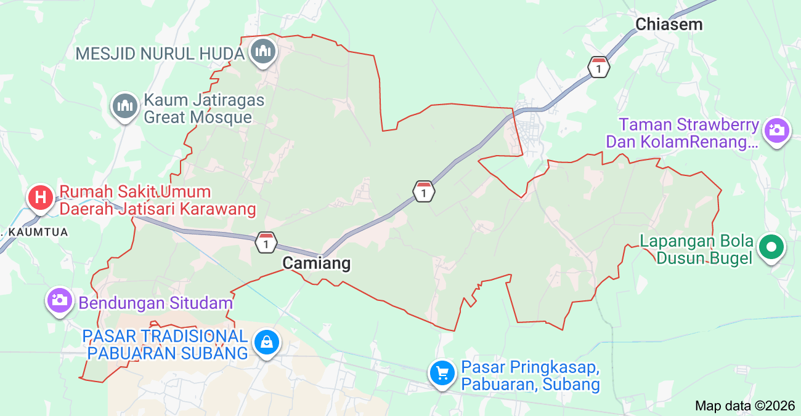

Kecamatan Patokbeusi terletak di bagian utara Kabupaten Subang dan memiliki akses jalan yang cukup strategis untuk kegiatan masyarakat dan ekonomi.
Wilayah Patokbeusi terdiri dari beberapa desa dengan kondisi geografis yang mendukung kegiatan pertanian dan perdagangan masyarakat setempat.
Akses menuju Kecamatan Patokbeusi dapat ditempuh melalui jalur utama Kabupaten Subang sehingga memudahkan mobilitas warga dan distribusi hasil pertanian.
Peta wilayah Kecamatan Patokbeusi menunjukkan batas-batas desa serta jaringan jalan yang menghubungkan antar wilayah di sekitarnya.
Dengan letak geografis yang cukup strategis, Kecamatan Patokbeusi memiliki potensi perkembangan ekonomi dan pembangunan wilayah yang cukup baik di masa mendatang.